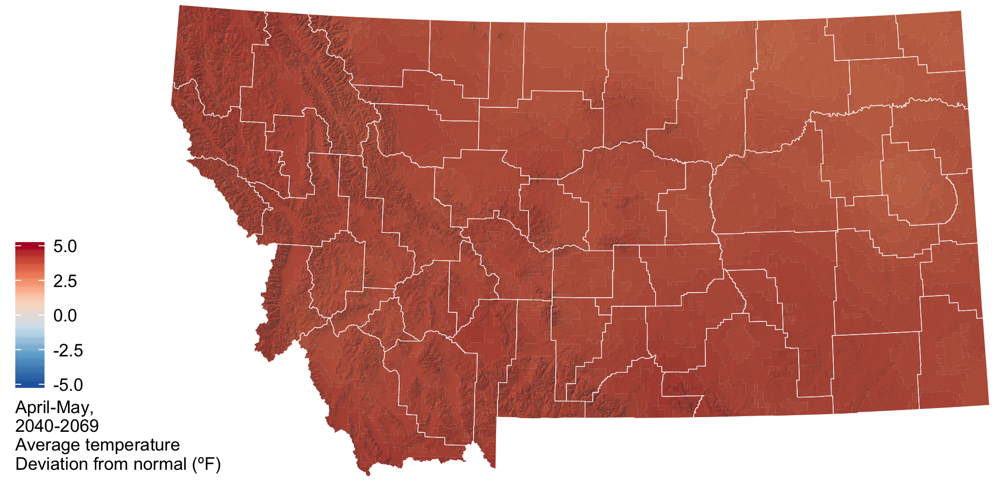
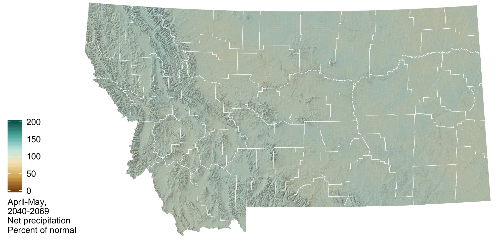

April–May Mid-century Outlook
Understanding how climate change will impact agriculture in the future can be difficult. It is often helpful to compare future climate projections to the conditions that we are currently experiencing. Below, we compare mid-century temperature and precipitation projections for January through March to our current normal (1981–2010). In short, mid-century winter and spring will look a lot different than what we are currently experiencing in terms of increasing temperatures and reduced snowpack.
 Temperature
Temperature
By mid-century (2040–2069) average temperatures from January through March are expected to be 4–6 degrees warmer than current temperatures. Generally, temperature is projected to increase more in eastern and central Montana relative to the northwest portions of the state. Increased temperatures will result in an earlier start to the growing season. In addition, snowmelt will occur earlier and a larger proportion of our February and March precipitation will be in the form of rain as opposed to snow.


 Precipitation
Precipitation

